Tutorial¶
A guided walkthrough — from an empty directory to a tracked, iterating Azure ML training job — in ten minutes.
1 · Install¶
aj is distributed on PyPI. Install via pipx
so the CLI lives in its own isolated environment:
sudo apt install pipx # or: python3 -m pip install --user pipx
pipx ensurepath
pipx install azure_jobs
Verify:
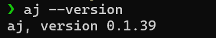
Authenticate¶
aj uses the standard Azure credential chain. A one-time az login is
enough for most users:
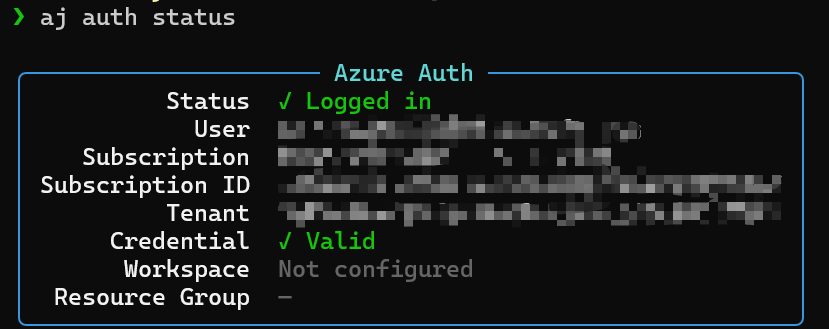
The Volcano backend additionally requires kubectl configured
against your cluster.
2 · Author a template¶
Start from an empty project directory:
A template is just YAML. aj composes a final job spec by walking the
base: chain, so a typical project splits concerns into four kinds of
files under .azure_jobs/. Every file has the same outer shape:
Below is the actual .azure_jobs/ layout of this repo (HSPK/azure_jobs),
trimmed to the relevant files:
.azure_jobs/
├── account/
│ └── drl.yaml # account-level overrides (managed identity)
├── storage/
│ └── default.yaml # blob mounts
├── environment/
│ ├── base.yaml # job defaults (sla / priority / env)
│ └── sing.yaml # Singularity image + setup scripts
└── template/
├── base.yaml # code.local_dir + ignore list
└── vca100.yaml # leaf — selected by `-t vca100` at submit time
Fast path: prefer guided over manual? Jump to §2.7 and let
aj template initcreate all four files for you from live Azure data. The walk-through below explains what those files actually contain.
2.1 · Account — managed identity¶
Files under account/ hold account-level overrides. The most common
one is the Singularity managed identity used to mount storage:
# .azure_jobs/account/drl.yaml
base:
config:
jobs:
- submit_args:
env:
_AZUREML_SINGULARITY_JOB_UAI: <YOUR_MANAGED_IDENTITY_UAI>
<YOUR_MANAGED_IDENTITY_UAI>— full ARM ID of the user-assigned managed identity used to mount storage. List the ones you can read with:
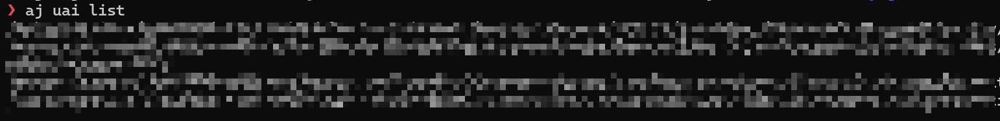
2.2 · Storage — blob mounts¶
Each entry under storage: becomes a datastore + mount in the job
container:
# .azure_jobs/storage/default.yaml
base:
config:
storage:
shared: # mount alias, free-form
storage_account_name: <STORAGE_ACCOUNT>
container_name: <CONTAINER>
mount_dir: /mnt/shared
private:
storage_account_name: <STORAGE_ACCOUNT>
container_name: <CONTAINER>
mount_dir: /mnt/private
<STORAGE_ACCOUNT>/<CONTAINER>— list datastores already registered in your workspace (these are the storage accounts AML can see):To discover other storage accounts in your subscriptions:
mount_dir— any path inside the job container; you choose it.
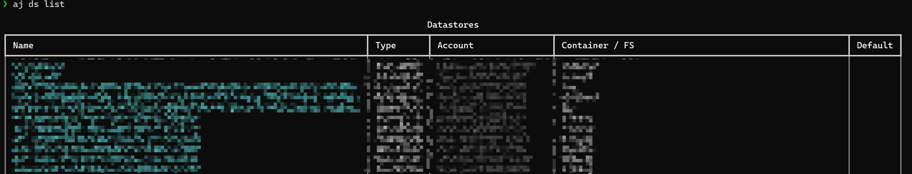
2.3 · Environment — image, setup, job defaults¶
Split into a generic base.yaml and the Singularity-specific overlay:
# .azure_jobs/environment/base.yaml
base:
config:
jobs:
- identity: managed
sla_tier: Premium
priority: high
process_count_per_node: 1
submit_args:
env:
AMLT_DIRSYNC_MOVE: true
SHARED_MEMORY_PERCENT: 0.9
NCCL_TIMEOUT: 6000000
NCCL_DEBUG: ERROR
TORCH_NCCL_BLOCKING_WAIT: 1
container_args:
shm_size: 2048g
# .azure_jobs/environment/sing.yaml
base: base # inherits environment/base.yaml
config:
target:
service: sing
environment:
image: <REGISTRY>/<IMAGE>:<TAG>
setup:
- bash ./.azure_jobs/scripts/install.sh
jobs:
- submit_args:
container_args:
user: root
<REGISTRY>/<IMAGE>:<TAG>— for Singularity, list the curated base images:
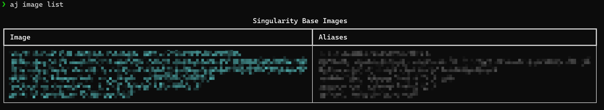
2.4 · Template base — code upload rules¶
A second base.yaml lives inside template/ and is what leaves
inherit via base: base (plain name → same directory). It holds the
project-wide code upload settings:
# .azure_jobs/template/base.yaml
config:
code:
local_dir: "$CONFIG_DIR/../../" # repo root, two levels above .azure_jobs/
ignore:
- "runs/"
- "log/"
- "wandb/"
- "output"
- "checkpoints/"
- ".git/"
- "__pycache__/"
2.5 · Leaf — what you actually submit¶
This is the one file selected by -t vca100. It picks the VC, points
at a workspace, and resolves the SKU at submit-time from {nodes} /
{processes}:
# .azure_jobs/template/vca100.yaml
base:
- base # template/base.yaml (code rules)
- account.drl # account/drl.yaml (sing UAI)
- storage.default # storage/default.yaml (mounts)
- environment.sing # environment/sing.yaml + base.yaml
config:
target:
name: <VC_NAME> # Singularity virtual cluster
workspace_name: <WORKSPACE> # override aj_config.json if needed
subscription_id: <SUBSCRIPTION_ID>
resource_group: <RESOURCE_GROUP>
_extra:
processes: 1
jobs:
- sku: "{nodes}x40G{processes}-A100"
<VC_NAME>/sku— list the VCs you can submit to and the SKUs available on each:In the SKU string,
{nodes}/{processes}are filled in from-n/-pat submit time.
<WORKSPACE>/<SUBSCRIPTION_ID>/<RESOURCE_GROUP>— set them here, or omit them and put workspace defaults in.azure_jobs/aj_config.json(runaj initonce to generate one). Inspect or browse with:
Inspect what you wrote¶
aj template list # all leaves
aj template show vca100 # resolved config, post-inheritance
aj template validate # schema sweep across all templates
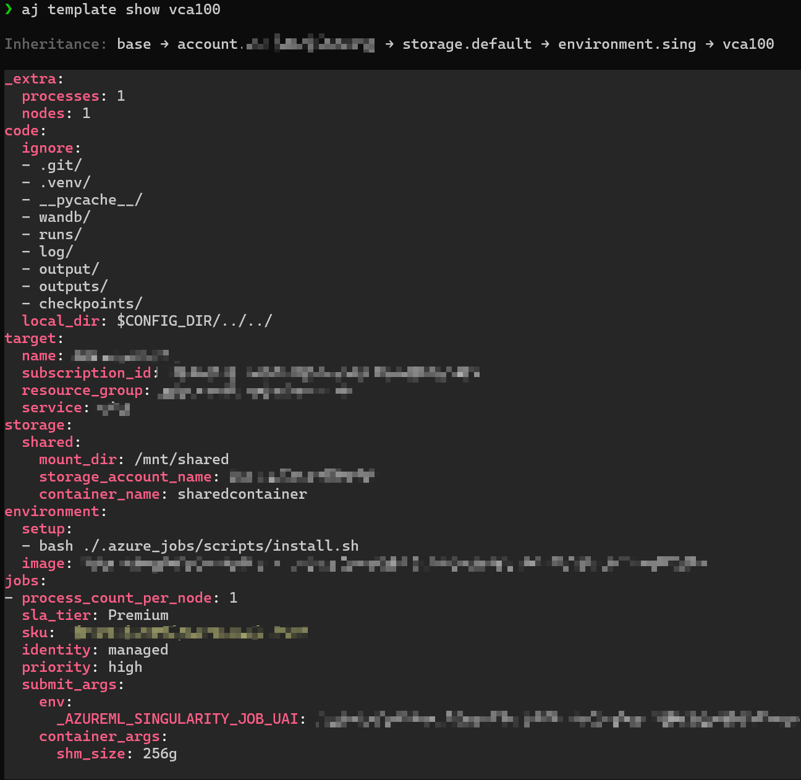
2.6 · Share via a private GitHub repo¶
Push the .azure_jobs/ tree to a GitHub repo so the rest of your team
can aj pull <user>/<repo>. Use a private repo if any value in
account/ or storage/ is sensitive.
One-time, on GitHub — create an empty private repo, e.g.
my-org/aj-templates.
One-time, on your machine — make sure SSH auth works, since aj
pull / aj template push shell out to git:
ssh-keygen -t ed25519 -C "you@example.com"
# add ~/.ssh/id_ed25519.pub to GitHub → Settings → SSH and GPG keys
ssh -T git@github.com # verify
First push — tell aj which remote owns these templates, then push:
aj pull my-org/aj-templates # register the remote (empty repo OK)
aj template push -m "initial templates" # mirror .azure_jobs/ → remote
Teammate onboarding — anyone with read access can now bootstrap against the same templates:
aj template pushclones the remote into a temp dir, mirrors your local.azure_jobs/over it (skippingrecord.jsonlandaj_config.json), commits, and pushes. Runaj template difffirst to preview what will change.
2.7 · Fast path — aj template init¶
§2.1–§2.5 walked you through writing each file by hand so you understand the moving parts. For every leaf after the first, let the wizard pick everything from live Azure data:
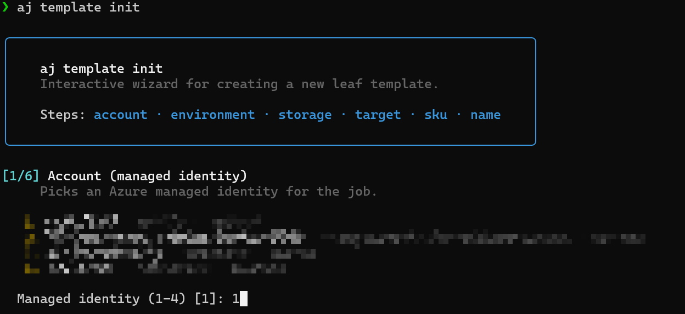
It walks through six steps and writes the same files §2.1–§2.5 produced manually:
| Step | What you pick |
|---|---|
| 1 · Account | A managed identity (from aj uai list) |
| 2 · Environment | A Singularity image (from aj image list) |
| 3 · Storage | Storage account + container + mount path |
| 4 · Target | A Singularity VC (from aj quota list) |
| 5 · SKU | One of the standard {nodes}x…-A100/H100/H200 patterns |
| 6 · Name | The leaf filename (what -t <name> selects) |
3 · A runnable demo¶
A leaf points at code that lives outside .azure_jobs/. Here is the
minimum project you need at the repo root for aj run -t vca100
train.py to actually do something:
my-project/
├── .azure_jobs/
│ └── scripts/
│ └── install.sh # one-time setup, baked by `environment.setup`
├── pyproject.toml # so `uv run train.py` resolves dependencies
└── train.py # entrypoint
.azure_jobs/scripts/install.sh — runs once per container at job
start (referenced by environment/sing.yaml → environment.setup):
#!/usr/bin/env bash
set -eo pipefail
# Make uv available so `uv run train.py` works on every node.
curl -LsSf https://astral.sh/uv/install.sh | sh
$SUDO cp $HOME/.local/bin/uv /usr/local/bin
$SUDO cp $HOME/.local/bin/uvx /usr/local/bin
uv python install 3.10
$SUDOis set by the container (empty when already root). The image picked in §2.3 already has CUDA / cuDNN / NCCL —install.shonly needs whatever your project adds on top.
pyproject.toml — aj run train.py shells out to uv run, so a
minimal PEP 621 file is enough:
[project]
name = "my-project"
version = "0.0.1"
requires-python = ">=3.10"
dependencies = [
"torch>=2.4",
]
train.py — a tiny CUDA-aware smoke test using the runtime
contract from §6:
import os, socket, torch
nodes = int(os.environ["AJ_NODES"])
gpus = int(os.environ["AJ_GPUS_PER_NODE"])
rank = int(os.environ.get("RANK", "0"))
print(f"[{socket.gethostname()}] rank={rank} "
f"nodes={nodes} gpus_per_node={gpus} "
f"cuda={torch.cuda.is_available()} "
f"devices={torch.cuda.device_count()}")
for i in range(torch.cuda.device_count()):
x = torch.randn(4096, 4096, device=f"cuda:{i}")
(x @ x).sum().item()
print("ok")
4 · Dry-run before you spend¶
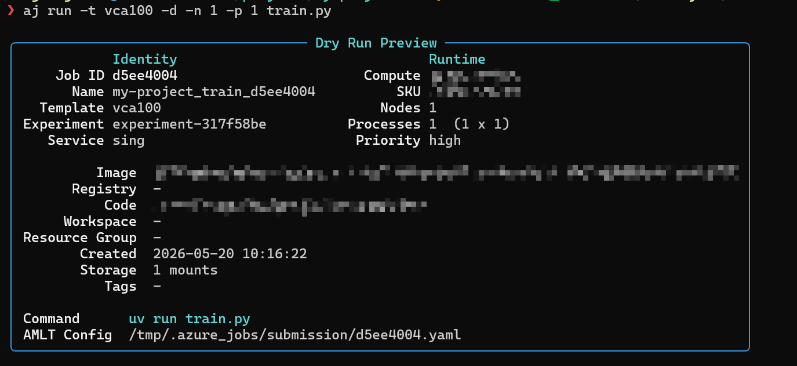
-d renders the full submission YAML to .azure_jobs/dryrun/<sid>.yaml
without uploading or submitting. Always do this after touching a
template.
Curious what gets uploaded?
A
.codeignore(or.amltignore) at the project root prunes the upload..git,__pycache__,.venv,node_modules, and.azure_jobs/(exceptscripts/) are always excluded.
5 · Pre-flight¶
Catch quota issues before submitting:
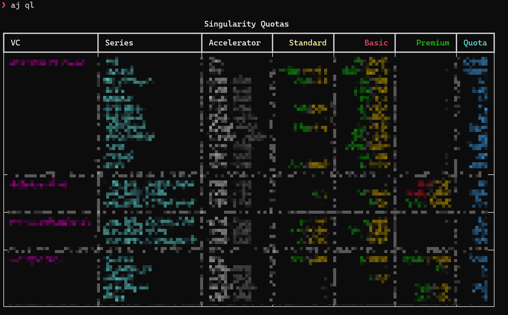
6 · Submit¶
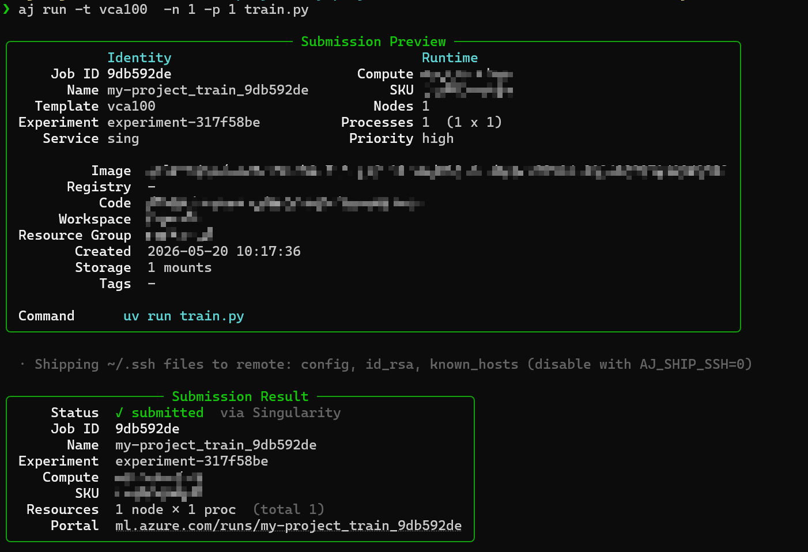
| Flag | Meaning |
|---|---|
-t |
Template (omit to reuse the last default) |
-n |
Nodes |
-p |
GPUs per node — drives SKU + AJ_GPUS_PER_NODE |
--ppn |
Launcher processes per node (e.g. torchrun --nproc-per-node) |
-d |
Dry run |
--amlt |
Submit via the amlt CLI instead of native REST |
Anything after the script forwards verbatim to your command. .py runs
via uv run, .sh via bash.
Every submission is appended to .azure_jobs/record.jsonl with a short
ID (AJ_ID) for later lookup.
Inside your training script¶
import os
nodes = int(os.environ["AJ_NODES"])
gpus = int(os.environ["AJ_GPUS_PER_NODE"])
run_id = os.environ["AJ_ID"]
Full env contract: env_vars.md.
7 · Track¶
aj list # local submission history
aj job list # cloud jobs in the current workspace
aj job list -s Running
aj job show <id> # detail panel (short ID works)
aj job logs <id> # stream + download
aj job cancel <id>
aj job stats # GPU-hours · success rate · breakdowns
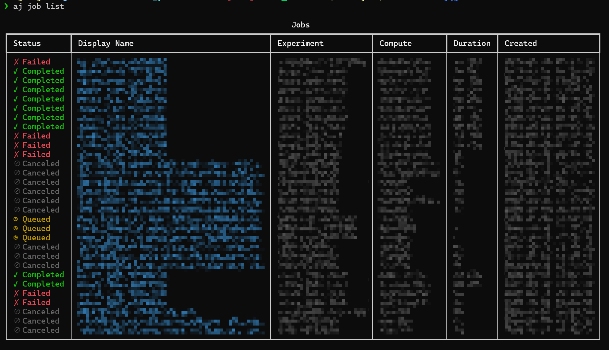
For interactive triage:
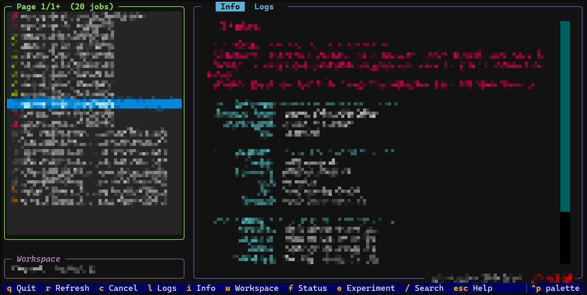
8 · Where to go next¶
| Topic | Doc |
|---|---|
| Full CLI reference (every command + flag) | commands.md |
Template syntax · base: resolution · merge rules · SKU patterns |
configuration.md |
AJ_* runtime contract + client-side flags |
env_vars.md |
Embed aj in Python |
sdk.md |
| How submission, merging, and upload actually work | architecture.md |
For automation, pass --json to any command — every command emits one
envelope with a kind=… discriminator, safe to pipe into jq.